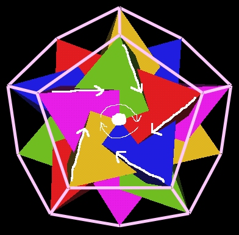
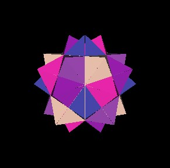

at Icosahedron type vertices
Lynnclaire reports that energy emerges from the 120 Polyhedron's Icosahedron type vertices and returns into the 120 Polyhedron through the regular Dodecahedron type vertices. This occurs when the 120 Polyhedron is deformed into an ellipsoid. (See the Pattern web site at http://www.pattern.org for more information on this deformation and other energy dynamics.)
When considering the energy flow through the 120 Polyhedra, we should consider the possibility of "vortex" like motion. That is, rotational motion in or out of the 120 Polyhedron. This is the kind of motion we showed with the Jitterbugs above.
Recall that the regular Dodecahedron defined by 5 intersecting Tetrahedra also defined what appears to be either a clockwise or counter clockwise vortex through the Dodecahedron's 12 pentagonal faces. The center of the Dodecahedron's faces is aligned radially with the Icosahedron type vertices of the 120 Polyhedron.
|

Fig. 7.1 Vortex through a Dodecahedron face |
Each face appears to have a vortex with the same rotational direction.
Notice that since there are 3 pentagonal faces around every regular Dodecahedron's vertex, the vortex circular motions will be in conflict with each other.
|
Fig. 7.2 3 Vortex rotational conflict |
Fig. 7.3 4 Vortex rotational synch. |
Because of this conflict, it is not clear that vortices are ever actually realized through the 12 face centers of the regular Dodecahedron.
If we consider the 5 intersecting Octahedra in the 120 Polyhedron as Jitterbugs, then we find that during the Jitterbug motion holes do appear at each Icosahedron type vertex.
|

Fig. 7.4 The 5 intersecting Octahedra |
|
Fig. 7.5 Dodecahedron face center |
|
Fig. 7.6 Icosahedron vertex |
|
|
|
Fig. 7.7 5 Jitterbug motions allows vortices
at Icosahedron type vertices |
During this motion, the Jitterbugs pass through a regular Dodecahedron and Icosahedron position.
|
Fig. 7.8 The 5 Jitterbugs in the Dodecahedron position |
|
Fig. 7.9 The 5 Jitterbugs in the Icosahedron position |
The "vortex" holes at the Icosahedron's 12 vertices are clearly visible when the 5 Jitterbugs are in the Dodecaheron position.
The other energy flow points that Lynnclaire describes, as mentioned above, occurs through the regular Dodecahedron's vertices. As we have described before, the vertices of the regular Dodecahedron coincide with the vertices of 5 Cubes. They are also radially inline with the Icosahedron face centers. The rotation axes of the 5 Jitterbugs also coincide with the 20 vertices of the Dodecahedron.
|
Fig. 7.10 One set of Jitterbug axes through Dodecahedron |
Each of the 5 Jitterbugs of the 120 Polyhedron has 8 triangular faces. In the closed position, a Jitterbug is an Octahedron. The face center of any of the Jitterbugs' faces is radially in line with the regular Dodecahedron's vertices.
If we define the domain of a "vortex" at each of the Dodecahedron's vertices to be the cones with there apex at the center of volume and such that the cone completely encircles the triangular face of a Jitterbug in the Octahedron position, then we see in the next figure that even for a single Jitterbug, the vortex domains overlap each other.
| Figs. 7.11, 7.12 Cones=Vortex Domains: Completely Encircle Triangles Overlap | |
| Figs. 7.13, 7.14 Cones=Vortex Domains: Completely Encircle Triangles Overlap | |
As we will see shortly, we can change the "open" angle of the 8 cones so that for a single Jitterbug the cones do not overlap each other. But I wanted to start with the cones open to such a degree as to completely enclose the Jitterbug's triangles because with these cones the circular rims of the cones can be used to trace out the knot pattern that Lynnclaire describes.
| Figs. 7.15, 7.16 The Pattern Knot Traced On Rim Of Cones | |
| Figs. 7.17, 7.18 The Pattern Knot Traced On Rim Of Cones | |
Actually, several different "Pattern" knots can be traced on the cone's rims.
|
Figs. 7.19 Another Pattern Knot On The Cone Rims |
|
Figs. 7.20 Different Open Angle Of The Pattern Knot |
Details about this knot can be found at Lynnclaire's web site www.pattern.org as well as my web pages at www.rwgrayprojects.com/Lynn/Lynn01.html
We can lessen the open angle of the 8 cones so that the cones do not overlap each other but are tangent to one another.
|
Figs. 7.21 Cones Of Jitterbug Faces Just Touch |
Recall that the Jitterbug triangles rotate as they move radially. The 8 cones could rotate in the same directions as the Jitterbug triangles rotate without any conflict. The cones would not interfere with one another. This seems like a good choice for the domains of vortex-like motion.
However, there are many Jitterbugs in the 120 Polyhedron. When we look at the 5 Jitterbugs/Octahedra (4 rotated as described above) we see that the cones do intersect one another.
|
Fig. 7.22 One set of Jitterbug cones. |

Fig. 7.23 All 5 sets of Jitterbug cones |
Fig. 7.24 Looking directly at Dodecahedron's face center |
Each "petal" of the intersecting cones is centered on one of the 120 Polyhedron's "diamonds" (a rhombic Triacontahedron's face.)
|
Fig. 7.25 The 120 Polyhedron's 30 "diamonds" in the cone's "petal" domains |
We can, of course, set the cone angle so that all 20 cones are tangent to one another.
|
Fig. 7.26 Cones around Dodecahedron's vertices |
However, because there are three cones touching every cone, there is no way to assign a rotation direction to each cone without some conflict in direction. (See Fig. 7.2 above.)
Each Jitterbug has 8 faces. With 5 Jitterbugs, this gives a total of 5x8=40 triangular faces. Therefore, each of the Icosahedron's 20 faces is covered by 2 Jitterbug faces. It can be seen in the movies above that these 2 Jitterbug triangles per Icosahedron face (Dodecahedron vertex) rotate in opposite directions. This, again, raises the question as to whether or not this Jitterbug motion, and vortices through the regular Dodecahedron's 20 vertices, are ever realized.